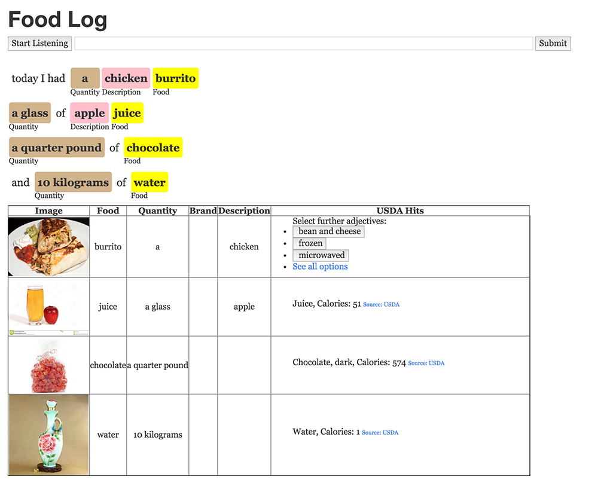
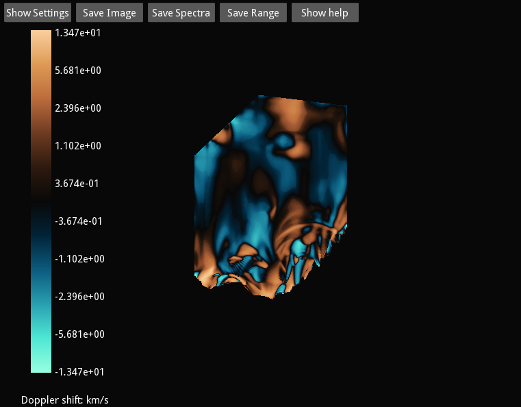
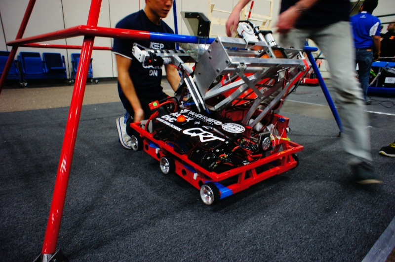
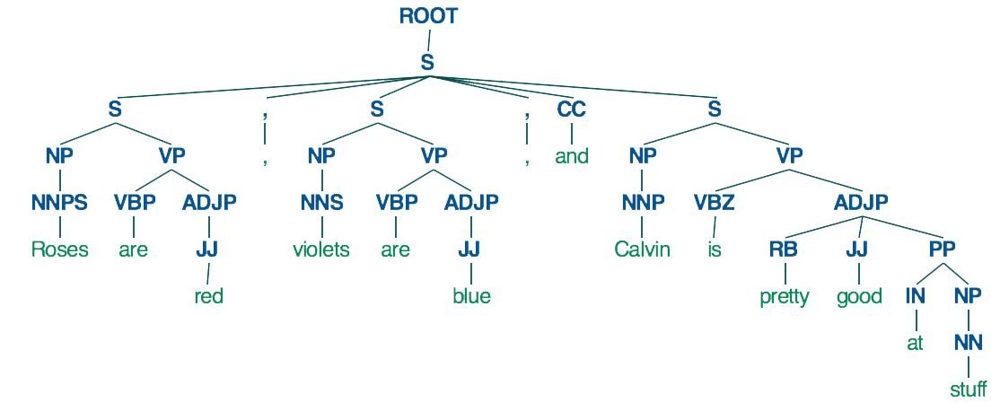

I'm a student at MIT, who is particularly interested in machine learning and its applications with regards to natural language and images. I'm also interested in other fields of computer science, especially robotics and artificial intelligence, as well as electrical and systems engineering.
Postsecondary Education
Massachusetts Institute of Technology
Course 6.2—Electrical Engineering and Computer Science
Relevant Coursework
Theory of Computation, Design and Analysis of Algorithms, Computation Structures, Digital & Computational Photography, Intro to EECS
GRADUATING IN MAY 2018
IN PROGRESS
Secondary Education
Gunn High School (GPA: 4.38)
Relevant Coursework
AP Computer Science, AP Economics, AP Physics C, BC Calculus, Engineering Technology
GRADUATED IN MAY 2014
Undergraduate Researcher
MIT Spoken Language Systems
Helped develop Nutrition System, which displays and tracks nutrition information from a spoken meal description
Improved semantic labelling of foods and food properties using properties of word vectors as features
JAN 2015 - CURRENT
Test Engineer
Sentient Energy
Full-time during summer
Developed and prototyped automated testing solutions for various components of the MM3 energy monitor
MAY 2014 - AUGUST 2014
Solar Computational Scientist - Intern
Lockheed Martin Solar Astrophysics Lab
Full-time during summer
Created utility br_ioni to generate and analyze solar simulations;
compared simulation output and empirical data to improve simulation methodologies—submitted
findings to Intel Science Talent Search
JUNE 2013 - MAY 2014
Technical Leader - Controls
Gunn Robotics Team
Led controls group of GRT since 2012
Managed software development and electrical subsystems of the robot, as well as robotics team's computers and networking equipment.
Led development of GRTPyFramework.
AUGUST 2010 - MAY 2014
Natural Language Processing Researcher - Intern
Stanford NLP Group
Researched and created heuristics to improve the accuracy of Semantic Role Labeling and
studied the effects of using structured learning on the accuracy of SRL; developed NLP library
SPinACh—received
special award from the Association of Computing Machinery at the Synopsys Science Fair.
JULY 2012 - DEC 2012
Web Designer, Programmer, & Webmaster
Westshore Music Academy
Designed and maintained website for start-up at
westshoremusicacademy.com
OCT 2013 - CURRENT
Web Programmer & Webmaster
Eneron, Inc
Programmed and maintained website for start-up at
turbopot.com
JULY 2010 - DEC 2010
Best Physics Experiment
International Physics Olympiad
JULY 2013
Association of Computing Machinery Special Award, 2nd Place
Synopsys Science Fair
MARCH 2013
USAJMO Winner
USA Junior Math Olympiad
MAY 2012
HiMCM Finalist
High School Mathematical Contest in Modeling
FEBRUARY 2013
Programming
Python, Java, CUDA, C, C++, LaTeX, Haskell, Bash, ROS, HTML/CSS
Natural Language Processing, Robotics, Data Analysis, GUI/Web Design
Engineering
EAGLE, Circuit Simulation, Machining, Solidworks, Inventor



Gunn Robotics / GRTPyFramework

Created by BLACKTIE.CO